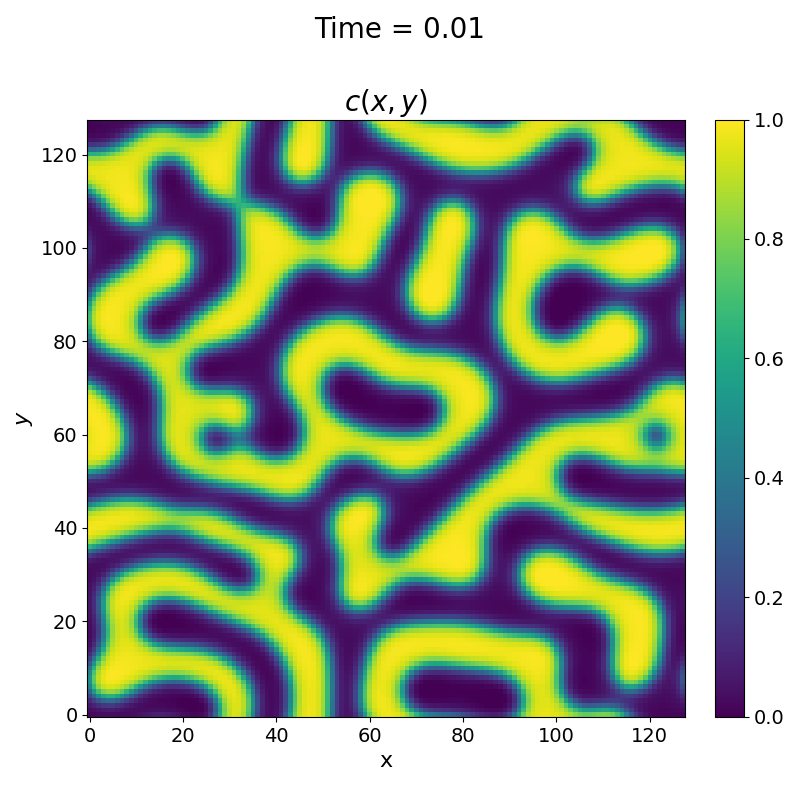
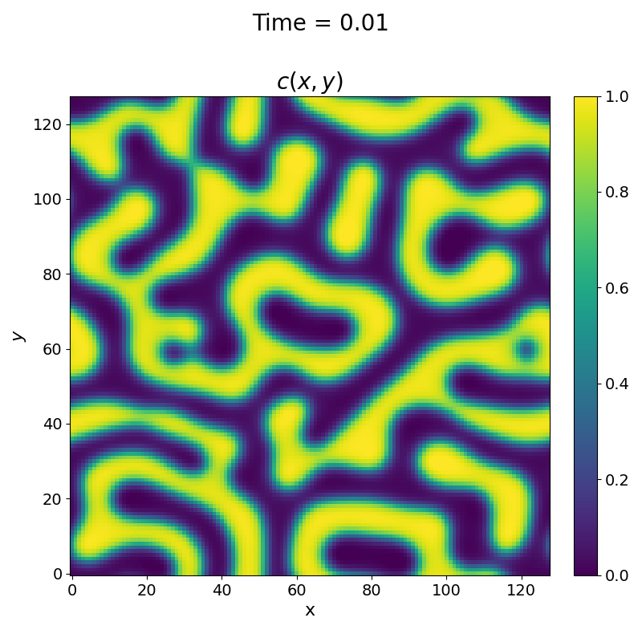

To run the code using the pseudo-spectral solver,, the problem variable in your input.txt
file needs to be set to "spectral".
You must also make sure you set the variables mobility_a and
mobility_b to the values you want to simulate, as spectral can only simulate with a constant mobility field
that is calculated from the Darkens equation (definition).
Again, we shall set the atomic mobilities to four, such that \(M\) is equal to one for an initial average concentration of 0.5.
The spectral solver is less sensitive to the set timestep compared to the serial Eulerian solver; however, it still needs to be small when the
stabilization_term parameter is set to zero. Below is an example of an input file that can be used for
the spectral solver in SpinDec2:
concentration_max = 0.6 concentration_min = 0.4 domain_x_size = 128 domain_y_size = 128 mobility_a = 4 mobility_b = 4 free_energy_gradient_parameter = 0.0001 bulk_free_energy = 1 checkpoint_interval = 5000 checkpoint_output_file = "out.cp" checkpoint_input_file = "out.cp" max_time = 4e-2 time_step = 1e-5 random_seed = 1234 use_input = 0 excitation_a = 1 excitation_b = 2 temperature_min = 950 temperature_max = 1050 problem = "spectral" stabilization_term = 0 write_frequency = 1 single_precision = 0
The spectral method calculates the new grid at each iteration is different from the serial method, but we should expect the physics to be the same for both. We can expect slightly different patterns due to numerical differences from using FFTs rather than finite differences. Still, we should expect to see the same free energy trend for both methods. Below are the results for both the spectral solver and the serial solver using the "constant" mobility definition (seen in Example 1).
Pseudo-Spectral Solver

Serial Solver
 



From the above, we can see that the two solvers produce similar results and exhibit the same physical behaviours.
Probing Deeper In Time
As stated before, the spectral solver is able to use larger time steps, even with the stabilization_term set to zero.
This allows us to simulate further in time without requiring large amounts of memory (i.e. smaller number of iterations). The input file example below uses the same time step
and physical parameters as before but simulates the binary alloy system ten times longer.
concentration_max = 0.6 concentration_min = 0.4 domain_x_size = 128 domain_y_size = 128 mobility_a = 4 mobility_b = 4 free_energy_gradient_parameter = 0.0001 bulk_free_energy = 1 checkpointing_interval = 5000 checkpoint_output_file = "out.cp" kcheckpoint_input_file = "out.cp" max_time = 4e-1 time_step = 1e-5 random_seed = 1234 use_input = 0 excitation_a = 1 excitation_b = 2 temperature_min = 950 temperature_max = 1050 problem = "spectral" stabilization_term = 0 write_frequency = 1 single_precision = 0
The result from the input file is shown below:
Changing The Stabilization Term
Using the stabilization_term, we can now use even larger timesteps as the
stability of the solver is enhanced. The downside of using a more negative value of stabilization is that it reduces the physical accuracy of the solver
for the early period. However, as we are only interested in simulating for a long period, we don't have to worry about it too much.
For this example, we will use a stabilization_term value set to -2, and a time step and final time of 0.01 and 1 respectively.
concentration_max = 0.6 concentration_min = 0.4 domain_x_size = 128 domain_y_size = 128 mobility_a = 4 mobility_b = 4 free_energy_gradient_parameter = 0.0001 bulk_free_energy = 1 checkpointing_interval = 5000 checkpoint_output_file = "out.cp" kcheckpoint_input_file = "out.cp" max_time = 1e1 time_step = 1e-2 random_seed = 1234 use_input = 0 excitation_a = 1 excitation_b = 2 temperature_min = 950 temperature_max = 1050 problem = "spectral" stabilization_term = -2 write_frequency = 1 single_precision = 0
The result from the input file is shown below:

We can see even further evoloution from the previous figure, with the final snapshot showing a complelty stable end state of purley horizontal regions of the \(A\) and \(B\) species.